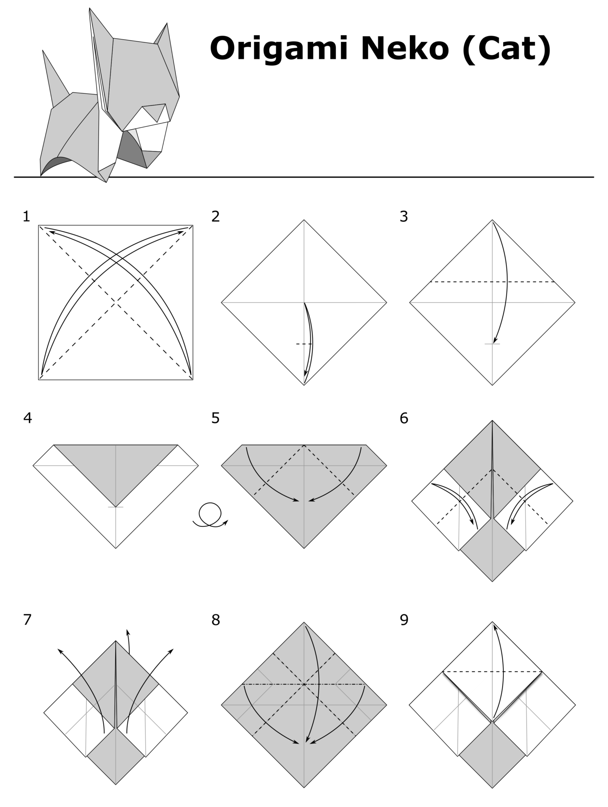
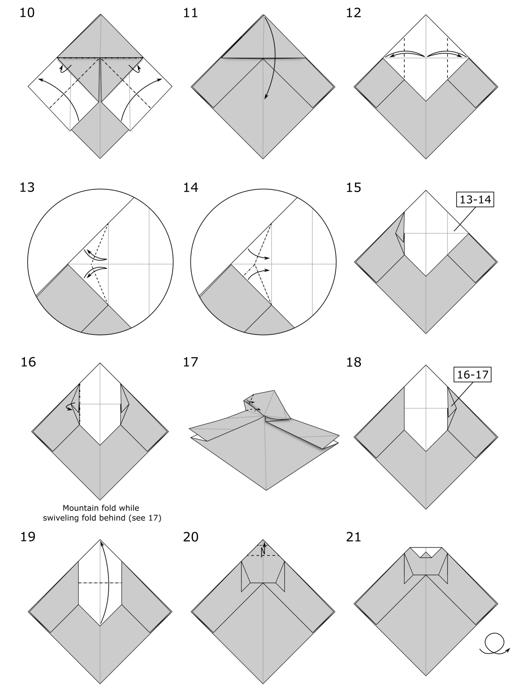
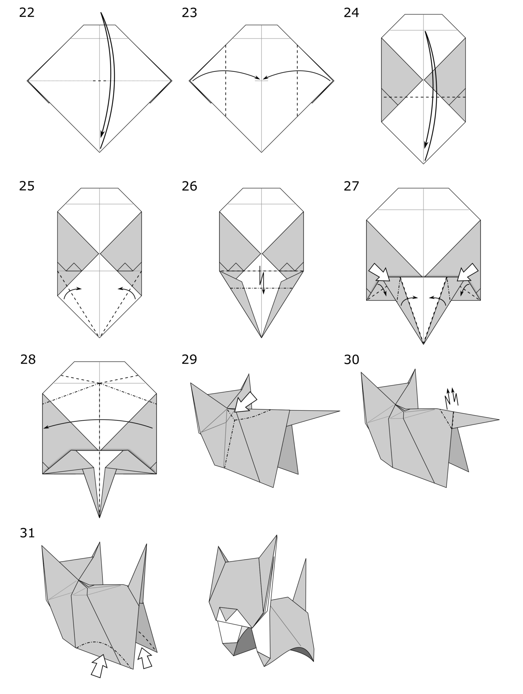

Origami is relaxing, creative, and requires only a sheet of paper and a bit of focus. The art of origami originated in Japan, and its name literally means "folding paper." Some believe it started in the 17th century, and since then, it has evolved into a global art form that blends geometry, meditation, and beauty. Whether making a simple crane or a complex cat, origami trains patience and brings joy.
These diagrams, originally designed by Jo Nakashima, walk you through every step to fold a paper cat. Follow each part carefully.
  